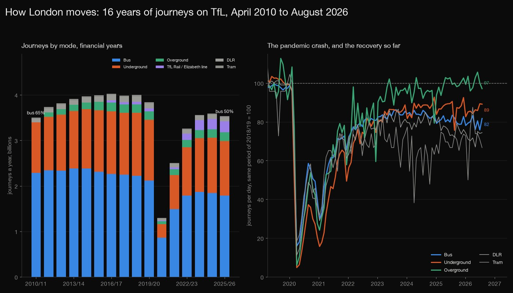
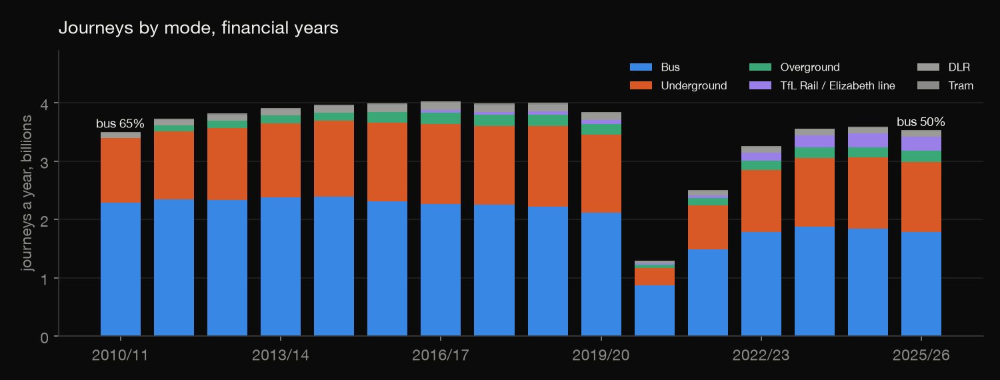
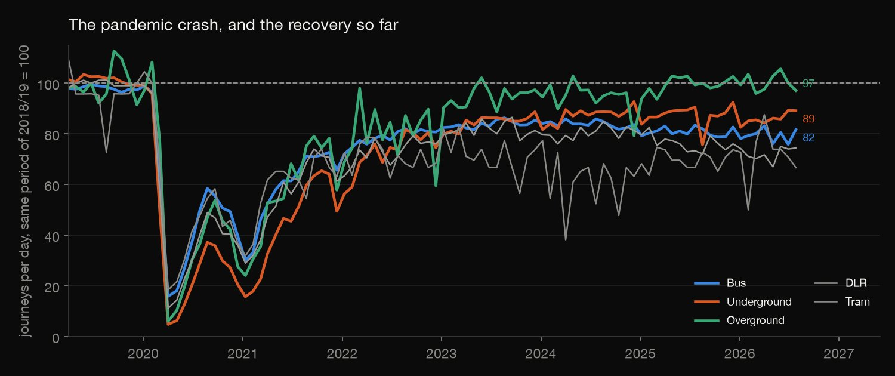
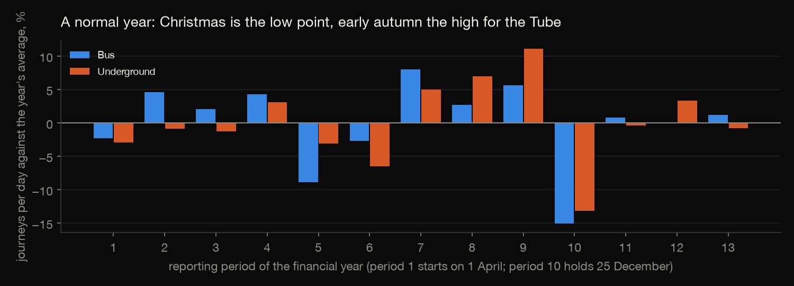
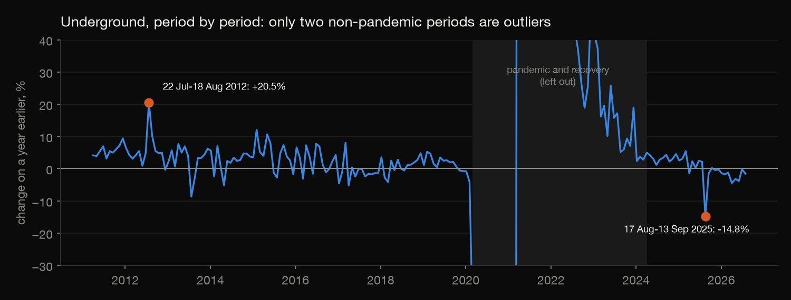

SQL · Transport analysis · 2026-10
How Much of London's Travel Has Come Back?
Sixteen years of journeys on London's buses, Tube and rail, from TfL's own open table, in SQL: how the mix shifted, how far the pandemic cut travel and how much has returned (Tube 89%, buses 82%), what a normal year looks like, and the table's own bookkeeping errors.

Counts are TfL's own (boardings or entries by mode), so modes are not strictly comparable; National Rail journeys in London other than Overground and the Elizabeth line are not included. The last column is named "TfL Rail"; from 2022 it appears to carry the Elizabeth line, which is an inference. The data cannot say why a period is odd. Contains public sector information licensed under the Open Government Licence v2.0.
01 — The problem
London's transport network lost almost all its passengers in April 2020. Six years on, how much has come back, on which modes, and what else do sixteen years of journey counts show?
Transport for London publishes journeys for every four-week reporting period, by mode, from April 2010 to August 2026. The questions follow DataCamp's "Exploring London's Travel Network" project, which used the same kind of data up to 2022.
02 — What I built
TfL's table loaded into DuckDB, and six SQL questions, each in its own file:
- Mode share: journeys and share by mode and year.
- The pandemic: each mode's journeys against the same period of 2018/19: the trough and the recovery.
- A normal year: the seasons, and Christmas.
- Odd periods: found with window functions and a robust score.
- Data quality: where the table disagrees with itself.
- Check:
check.pyrebuilds every table in plain Python, with no SQL: 1,596 numbers agree.
03 — How it was built
- 01
Download the table
TfL's journeys (in millions) for each reporting period, for bus, Underground, DLR, tram, Overground, cable car and "TfL Rail". It is 14 KB, so the file is committed with the pull date.
- 02
Fix the calendar before counting
Two problems come first. The 13 periods of financial year 2020/21 are labelled "19/20" in the file, so the year is worked out from each period's start date. And the file's "Days in period" disagrees with the period's own dates in six periods, so the length comes from the dates. Then the seven mode columns are unpivoted into one row per period and mode.
FROM periods UNPIVOT (millions FOR mode IN (bus, underground, dlr, tram, overground, cable_car, elizabeth_line)); - 03
Share by mode
Query 1 adds up complete financial years (13 periods), ranks the modes within each year with a window function, and finds each mode's growth on the year before with
LAG.RANK() OVER (PARTITION BY fy ORDER BY millions DESC) AS rank_in_year, - 04
Measure the pandemic against the same period
Comparing each period with the annual average would mix in the seasons, so each period's journeys per day are compared with the same reporting period of 2018/19, the last normal year (2019/20's last period is already hit by the lockdown). For each mode: the trough, when it first got back to 90% and 100%, and the latest value.
MIN(i.starts) FILTER (WHERE i.starts > t.trough_start AND i.ix >= 90) AS first_back_to_90, - 05
Find the shape of a normal year
Each period against its year's average, averaged over the 14 normal years (2010/11 to 2019/20 and 2022/23 to 2025/26), for buses and the Underground. A second query finds which period holds 25 December: period 10, in every one of the 16 years.
- 06
Hunt for odd periods
Each period is compared with the same period a year earlier. Because the pandemic would swamp everything, March 2020 to March 2024 is left out, and the rest are scored with the median and the median absolute deviation, which one wild value can't distort. Above 3.5 is the usual flag.
SELECT c.mode, c.starts, c.ends, c.fy, c.period_no, ROUND(c.yoy, 1) AS yoy_pct, ROUND(0.6745 * (c.yoy - s.med) / m.mad, 1) AS modified_z, - 07
Audit the table
The first anomaly pass was full of "events" that weren't. Checking the table against itself found why: six periods whose listed length doesn't match their dates, and a wrong length also distorts the next year's comparison. Query 5 lists them and shows the damage; every other query uses the lengths from the dates.
FROM b WHERE days_listed <> days ORDER BY starts; - 08
Rebuild it without SQL
check.pyrereads the raw CSV with plain Python (dates, dictionaries and the statistics module; no DuckDB, no SQL, no pandas) and recomputes every table: totals, shares, ranks, growth, the recovery index, the troughs and first returns, the seasons, the Christmas period, the medians and scores, and the audit. The results are rounded, so each comparison allows half a unit in the last place. All 1,596 numbers agree.full = {k: sum(x["millions"] for x in v) for k, v in years.items() if len({x["period_no"] for x in v}) == 13}
04 — Results

Buses are still first, but less so. Bus carried 65.4% of journeys in 2010/11, 55.0% in 2019/20 and 50.5% in 2025/26; the Underground 31.6%, 34.8% and 34.1%; TfL Rail and the Elizabeth line 1.6% (2019/20) and 6.9%. Total journeys: 3.50 billion in 2010/11, 3.85 billion in 2019/20 and 3.53 billion in 2025/26. Against 2019/20, bus journeys in 2025/26 are down 15.6% and the Underground 9.9%.

| % of normal | Trough | Latest |
|---|---|---|
| Overground | 6.0 | 97.1 |
| Underground | 4.8 | 89.1 |
| Bus | 15.9 | 81.7 |
| DLR | 11.2 | 74.4 |
| Tram | 18.4 | 66.7 |
The pandemic, and what has come back. In 2020/21 bus journeys fell 59.1% and Underground journeys 77.8%. The table shows each mode's journeys per day as a share of the same period in 2018/19, at the worst period (April 2020) and in the latest one (26 July to 22 August 2026). Overground got back to 90% in the period starting 6 March 2022 and to 100% in the one starting 28 May 2023; the Underground first reached 90% in the period starting 8 December 2024 and has not reached 100%; buses never reached 90%.

A normal year. Period 10 holds 25 December in all 16 years. Against the year's average it is 15.2% low for buses and 13.2% for the Underground; the Tube's best period is 9, the four weeks before it, at 11.1% above average.

Odd periods. For the Underground, 22 July to 18 August 2012 was 20.5% above a year earlier (score 4.8; the Olympics fall inside it), and 17 August to 13 September 2025 was 14.8% below (score −4.6). The other eight of the top ten score 3.0 or less. For buses nothing passes a borderline 3.5.
The table's own errors. Six of the 213 periods list a length that disagrees with their dates: 1 April to 2 May 2015 is 32 days by the dates and 26 as listed. With the listed length, bus journeys per day for that period look 23.9% up on a year earlier; with the real length, 0.7%. A wrong length also distorts the next year's comparison, so these showed up as the biggest "anomalies" until the lengths were taken from the dates.
05 — What I'd do next
- Add the Elizabeth line's own series, if TfL publishes one, to confirm what the "TfL Rail" column carries after 2022.
- Look for the cause of the August to September 2025 dip in an outside source, such as strike dates.
- Compare with population or employment in London to see whether journeys per person have changed.